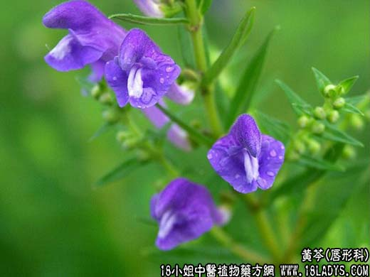

【中药概述】
黄芩为唇形科草本植物黄芩的根。苦、寒。归肺、胆、胃、大肠经。
1．清热燥湿：用于湿热泻痢、黄疸、湿温、热淋等，如（<伤寒论>黄芩汤）、（<温病条辨>黄芩滑石汤）、（火府丹）。
2．清泄肺热：用于肺热咳嗽、温病壮热烦渴及热毒疮痈，用治肺热咳嗽，常与知母 桑白皮同用；如燥热咳嗽，还可配合天冬 麦冬等同用。如（清咽宁肺汤）、（<张氏医通>黄芩泻肺汤）。
3．泻火解毒：用于热盛迫血妄行之吐衄与生地 白茅根同用，以凉血止血。
4．清热安胎：用于胎热不安，常与白术同用。
【药效鉴别】
黄芩既能清热，又可止血，故对热盛迫血外溢之证，有标本兼顾之妙。
【临证应用】
治疗小儿呼吸道感染。用50％的黄芩煎剂，每日1岁以下6ml，1岁以上8～10ml，5岁以上酌加，皆服3次。
【药理作用】
1.抑菌作用，对多种革蓝氏阳性、阴性细菌有抑菌作用。其煎剂对流感病毒有抑制作用；
2.有抗过敏性哮喘、抗肺炎作用；
3.有利胆、保肝作用。
【化学成分】
含黄芩素（黄芩甙元）、黄芩甙、汉黄芩素、汉黄芩甙、黄芩新素等。
【用量用法】
3——30g，水煎服，或入丸散剂。
【使用注意】
脾胃虚寒者不宜。
【注】
枯芩：黄芩老根中空而枯的，也称片芩。善清上焦湿热，尤长于泻肺火，欲其上行可酒炒。
子芩：新根中部坚实的，也称条芩。长于清除中、下焦的实热或湿热。
酒蒸芩：微苦，微寒。归肺、胆、胃、大肠经。入血分，引药上行，可治上焦肺热及四肢肌表之湿热，多用于目赤肿痛，瘀血壅盛。常配牛蒡子，连翘，薄荷，板蓝根等具有清热解毒，疏风
散邪药，可治头瘟，如<普济消毒饮>；配川芎，白芷可治风热上攻及头风热痛，如<秘方茶调散>；配杏仁，桔梗，枳壳，栀子等，具有清肺利气作用亦可配桑白皮，知母，麦冬等同用，如<清
肺汤>。